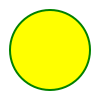

<!--
    SVG <svg>

    É uma marcação, estilo Html, mas não é para textos, e sim para fazer imagens.
    Possuimos elementos para gerar formas

    Para entender melhor
    - Imagem rasterizada x Imagem vetorizada

    Benefícios
    - Mais leve
    - Mais detalhado
    - Maior acessibilidade e SEO
    - Pode ser editada via CSS ou atributos

    Desvantagens
    - Pode ser mais complicado de trabalhar
    - Quanto mais complexa a imagem, mais trabalho para o navegador
    - Navegadores mais antigos não possuem suporte a essa tag

    Para fotografias, ainda prefira usar imagens rasterizadas.

-->
<!DOCTYPE html>

<svg width="210" height="210">
    <circle 
        cx="50" 
        cy="50" 
        r="40" 
        stroke="green"
        stroke-width="2" 
        fill="yellow"
    />
</svg>

<svg width="300" height="200">
    <rect 
        stroke="blue"
        stroke-width="6"
        width="100%" 
        height="100%" 
        fill="pink" 
    />
</svg>

